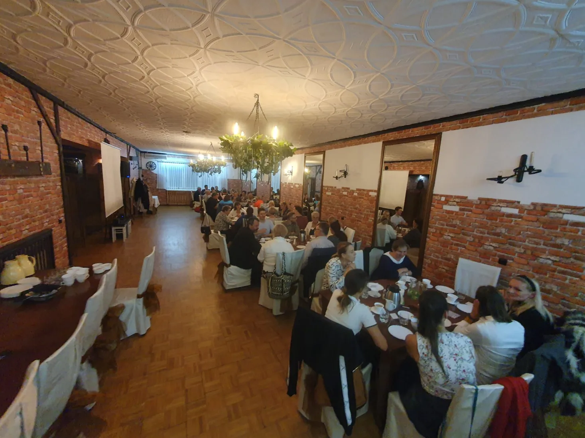
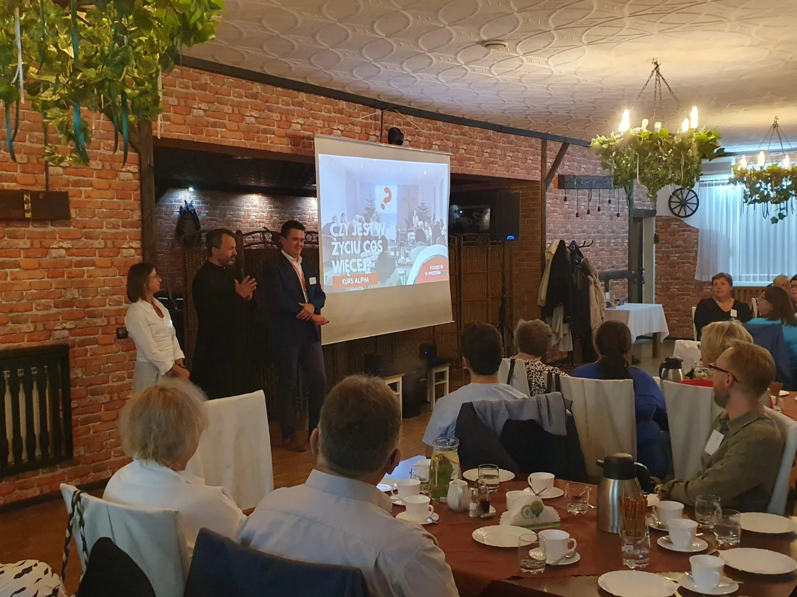

Rozpoznajemy sytuację
Rozmawiamy o parafii, osobach zainteresowanych, możliwościach i obawach. Pomagamy przygotować rozmowę z proboszczem.
Zacznij Alpha
RCA Lubecko pomaga przejść od pomysłu do pierwszej edycji: rozmawiamy, pokazujemy Alpha w praktyce, szkolimy zespół i wspieramy wdrożenie.
Cztery kroki
Rozmawiamy o parafii, osobach zainteresowanych, możliwościach i obawach. Pomagamy przygotować rozmowę z proboszczem.
Zapraszamy zainteresowane osoby, by zobaczyły istniejącą Alpha od strony ekipy i gości.
Wyjaśniamy role gospodarzy i pomocników, sposób prowadzenia rozmowy, logistykę i promocję.
Towarzyszymy podczas przygotowań i pierwszej edycji w takim zakresie, jakiego potrzebuje nowy zespół.

Szkolenie Poprowadź Alpha
Szkolenie pomaga zespołowi zrozumieć atmosferę Alpha, przygotować miejsce i promocję oraz nauczyć się prowadzić rozmowę bez wykładu i przekonywania na siłę.
Dla świeckich i proboszczów
Często pierwszy impuls przychodzi od osoby świeckiej. Możemy pomóc przedstawić Alpha proboszczowi, odpowiedzieć na pytania i pokazać doświadczenie parafii, w których format już działa.
Opowiedz nam o swojej parafii
Co przygotować?
Nie trzeba od razu mieć pełnej ekipy, daty i miejsca. Pierwsza rozmowa pomaga zobaczyć, czego naprawdę potrzeba na danym etapie.
Co chcesz zmienić i kogo widzisz jako pierwsze osoby do rozmowy?
Kto może poprzeć pomysł, pomóc spotkać się z proboszczem i zaprosić kolejnych ludzi?
Gotowość, by zobaczyć Alpha w praktyce, uczyć się i zaczynać w realnej skali.